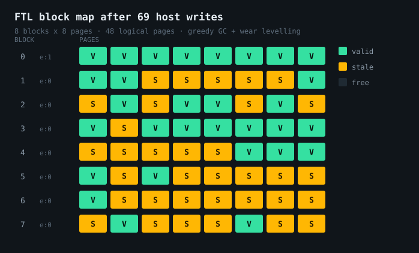

NAND Flash Simulator & Translation Layer
A dependency-free C11 model of NAND flash at the block and page level, enforcing the physical rules that make NAND awkward — then a flash translation layer on top of it with out-of-place updates, garbage collection and wear levelling, so you can watch write amplification happen.
Why NAND is strange
NAND flash is not a file and it is not RAM, and the difference is not a detail — it is why SSDs need a translation layer at all. Three physical rules drive everything, and the simulator enforces all three:
| Erase granularity | You erase a whole block, never a page. Erase sets every byte to 0xFF |
| Programming direction | Programming only flips bits 1 → 0. A page must be freshly erased before it can be written |
| Sequential ordering | Pages must be programmed in order within a block — 0, then 1, then 2 |
Reading is unrestricted. That asymmetry is the whole problem: you can read anywhere at any time, but you cannot modify anything smaller than a block, and modifying a block means erasing it. Update one page in place and you have to erase and rewrite everything around it.
> program 1 0 test data here Programmed block 1 page 0. > read 1 0 Block 1 page 0: "test data here" > program 1 0 overwrite Error: programPage: block 1 page 0 is already programmed -- erase the block before rewriting it (NAND can only flip bits 1->0; it cannot be reprogrammed in place)
The simulator
nand_flash.c models geometry as blocks → pages → bytes with
three-level pointer indirection (storage[block][page][byte]), tracking
per-page state and per-block erase counts. Geometry is configurable at creation —
the default 4 × 4 × 32 is small enough to inspect by hand; nand_create(128,
64, 2048) gives something closer to a real part.
Errors come back as NandStatus codes with a companion
nand_last_error() string, rather than exceptions — the conventional C
idiom, and it keeps the failure modes explicit at every call site. The interesting
statuses are the ones that encode the physics:
NAND_ERR_ALREADY_PROGRAMMED and NAND_ERR_OUT_OF_ORDER.
The translation layer
The FTL is where it gets interesting. It exposes a flat logical page interface —
write(lpn), read(lpn), trim(lpn) — and hides
the fact that the medium underneath cannot be overwritten. Four mechanisms make
that work:
| L2P mapping | Logical-to-physical table; a logical page can live anywhere |
| Out-of-place update | Rewriting a logical page writes to a fresh physical page and marks the old one stale |
| Garbage collection | When free blocks run out, the block with the most stale pages is picked as victim; surviving valid pages are relocated, then the victim is erased |
| Wear levelling | New active blocks are taken as the least-erased block in the free pool, spreading erases out |
Stale pages are the cost of out-of-place updates, and garbage collection is the bill. Every valid page GC has to relocate is a physical write the host never asked for — which is exactly what write amplification measures.
Watching write amplification appear
The demo makes the mechanism visible. Five sequential writes into a clean device cost exactly five physical writes — nothing wasted:
Logical pages: 48 Physical pages: 64 (blocks=8 x pages/block=8) Free blocks: 7 Active block: 0 (next page 5/8) GC runs: 0 Pages relocated: 0 Host writes: 5 Physical writes: 5 Write amplification: 1.00x Block Erases Valid Stale Pages (F=free V=valid S=stale) ---------------------------------------------------------------------- 0 0 5 0 VVVVVFFF 1 0 0 0 FFFFFFFF
Rewriting one logical page five times leaves the old copies behind as garbage — note block 0 filling with S while the live data migrates to block 7:
Free blocks: 6 Active block: 7 (next page 2/8) Host writes: 10 Physical writes: 10 Write amplification: 1.00x Block Erases Valid Stale Pages ---------------------------------------------------------------------- 0 0 4 4 SVVVVSSS 7 0 1 1 SVFFFFFF
Then garbage collection runs. Block 0 is the victim — most stale pages — so its three surviving valid pages are relocated into the active block and block 0 is erased and returned to the pool. Those three relocations are pure overhead, and the amplification figure moves for the first time:
Free blocks: 7 Active block: 7 (next page 5/8) GC runs: 1 Pages relocated: 3 Host writes: 10 Physical writes: 13 Write amplification: 1.30x Block Erases Valid Stale Pages ---------------------------------------------------------------------- 0 1 0 0 FFFFFFFF 7 0 4 1 SVVVVFFF
Ten host writes became thirteen physical writes, and block 0's erase counter went to 1. That is the entire reason SSDs wear out, reproduced in about fifteen lines of output.
Where it falls over
I ran a heavier workload against it — 300 random rewrites scattered across all 48 logical pages — to see how it behaved under sustained pressure. It stopped accepting writes after 69:
Error: garbage collection: ran out of free blocks mid-relocation (device is essentially full) Free blocks: 0 Active block: none GC runs: 1 Pages relocated: 3 Host writes: 69 Physical writes: 72 Write amplification: 1.04x Block Erases Valid Stale Pages ---------------------------------------------------------------------- 0 1 8 0 VVVVVVVV 4 0 3 5 SSSSSVVV 5 0 2 6 VSVSSSSS 6 0 1 7 VSSSSSSS 7 0 2 6 SVSSSVSS

The interesting part is that this is not a device that ran out of space. Blocks 4 through 7 are five to seven eighths stale — there is a lot of garbage to reclaim. The problem is that garbage collection needs somewhere to relocate the surviving valid pages to, and with the free pool empty and no active block, it has nowhere. GC needs free space in order to create free space.
The standard fix is to hold one block back exclusively for GC, so a reclaim pass can
always complete. With 48 logical pages against 64 physical, over-provisioning is
only two blocks, and both get consumed by host writes before GC needs them. Worth
checking whether raising the reserve in ftl_recommended_logical_pages()
pushes the failure out or just delays it.
Build & correctness
Compiles clean under -Wall -Wextra with no warnings, and clean under
AddressSanitizer and UBSan with no leaks or undefined behaviour reported — which
matters given the manual three-level allocation. Both are Makefile targets.
$ gcc -std=c11 -Wall -Wextra -O2 -o ftl_sim ftlmain.c ftl.c nand_flash.c (no output) $ make asan && ./ftl_sim clean — no leaks, no UB reported
One thing to fix: the Makefile lists ftl_main.c in
FTL_SRCS, but the file is named ftlmain.c. Plain
make builds nand_sim and then fails with
“No rule to make target 'ftl_main.o'”. One character.
Next
| Reserved GC block | Guarantee a reclaim pass can always complete |
| Bad block management | Retire blocks past an erase threshold and skip them |
| Bit-level programming | Allow rewrite where old & new == new — the literal NAND rule |
| ECC simulation | Random bit flips modelling charge leakage, with Hamming correction on read |
| Cost-benefit GC | Weight victim selection by block age, not just stale count |